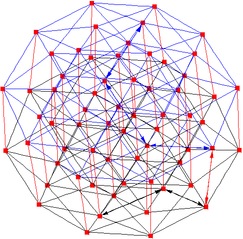

thwumps have 1 dangerous side, what about the other sides?
0 dangerous sided thwump, 3 dangerous sided thwump?
And even maybe just a two way elevator.
0 dangerous sided thwump, 3 dangerous sided thwump?
And even maybe just a two way elevator.


